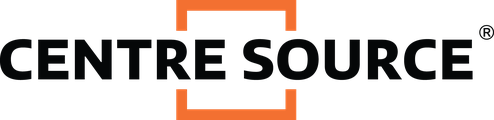
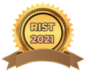
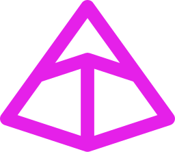

Evidence over urgency.
I set priorities with evidence, not urgency. That's how delivery got 22% faster.
I connect analytics, Agile delivery and AI to turn complex portfolios into results you can measure.
Mohammed Saleeq Sunil
Product & Project Leader · Business & Data Analytics
3+ years in analytics and delivery · clients in the US, NZ and AU
Faster delivery from an A/B testing framework I designed
Fewer errors on a Fortune-class client's AI pipeline
Less manual reporting after automating it in Python and SQL
Dashboards used by 200+ stakeholders
ROC-AUC on my live virality model
GPA, MS Business Analytics, Isenberg School of Management
Experience, education and credentials

I've spent over three years in business analysis and delivery, from SaaS products used on three continents to my current role leading analytics and operations at Holiday World. I build AI tools too, so I can take a problem from messy data to a shipped product.
I set priorities with evidence, not urgency. That's how delivery got 22% faster.
I build dashboards an engineer and an executive can both read in a minute.
I track dependencies and set escalation paths early, so work doesn't stall.
Flood-resilience research. Best Paper at RIST 2021, published by the American Institute of Physics (AIP).
Centre Source
Fingent Global Solutions
Isenberg School of Management, UMass Amherst. GPA 3.97/4
Holiday World
Holiday World · Holiday Channel, LLC
Sep 2026 – Present Current role
What I'm building
Fingent Global Solutions
Jun 2022 – Nov 2024
8 SaaS products · US, NZ, AU clients · teams of 15+
Change I drove
ReducedIncreased
−50%0+50%
Fingent Global Solutions
Mar 2022 – Jun 2022
KPI frameworks and capacity models for 3 programs
Change I drove
ReducedIncreased
−50%0+50%

Centre Source Technology Solutions
Nov 2021 – Mar 2022
Functional specs and Power BI for 5 client portfolios
Change I drove
ReducedIncreased
−50%0+50%
These are the seven I can show in full. Most of my work lives inside client programs and coursework, and more is on GitHub.

Machine learning · Live product
Virality prediction with XGBoost and SHAP, live on the web.

AI product · Claude API
Plain English in, ER diagram, SQL and sample data out.

Product analytics · Full stack
Funnel, retention, unit economics and AI growth levers in one place.
MS Capstone · Optimization
Facility-location model on Amazon Prime Air's drone network, under a $54.26M budget.
Data analysis · Python
143,266 records narrowed to a clear 1.83x answer.
Delivery leadership · Fingent
Faster delivery, fewer errors, less manual reporting.
Research · Published
Best Paper at the International Conference on Recent Innovations in Science and Technology (RIST 2021). Published by the American Institute of Physics (AIP).
Isenberg School of Management, UMass Amherst, 2025 – 2026

RIST 2021 · State-level award
"Automobile Exhaust Water Entry Prevention System", International Conference on Recent Innovations in Science and Technology (RIST 2021)
Peer-reviewed · First author · 2022
AIP Conference Proceedings 2463, 020063, published by the American Institute of Physics (AIP)
Scrum Alliance
Written and spoken English
Process and Agile tooling
25 hours over 5 days, Thrissur, August 2018
Johns Hopkins, University of London, UCL, UC Irvine and Autodesk, via Coursera
See all, with verification linksRaw data to clear answers.
Stories leaders act on.
Applied and shipped.
Programs that land.
Working software.

PydanticUMass Amherst · Isenberg School of Management
2025 – 2026
Drone hub network optimization, built on Amazon Prime Air's network
7 hubs sited · $54.26M budget · 31.46% of people within 15 minutes
Jyothi Engineering College · APJ Abdul Kalam Technological University
May 2021
Led the flood-resilient exhaust project. Best Paper Award at the International Conference on Recent Innovations in Science and Technology (RIST 2021), published by the American Institute of Physics (AIP).
Certificates from Johns Hopkins, the University of London, UCL, UC Irvine and Autodesk, earned on Coursera.
Johns Hopkins University
University of London
UCL School of Management
University of California, Irvine
University of London
Autodesk
Open to Data Analyst, Senior BA, Product Owner, PM and Scrum Master roles.
mohammedsaleeqs@gmail.com